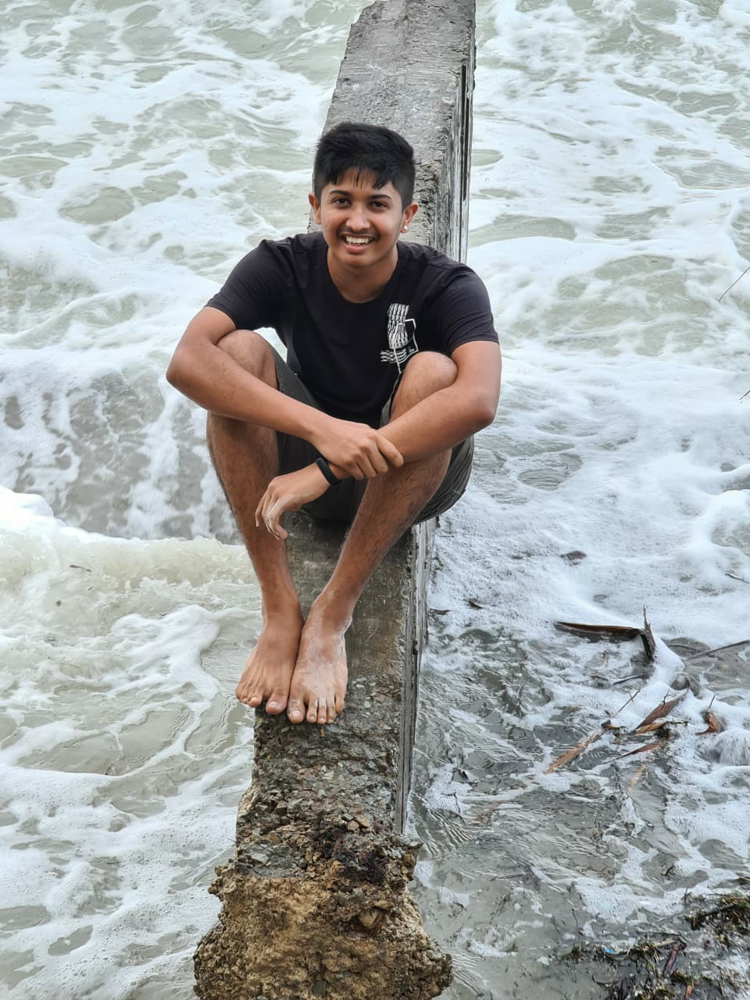
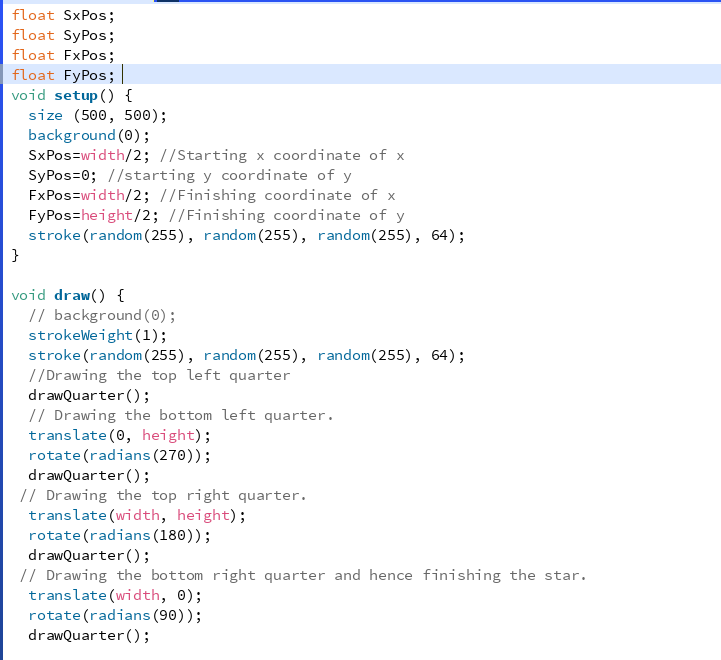
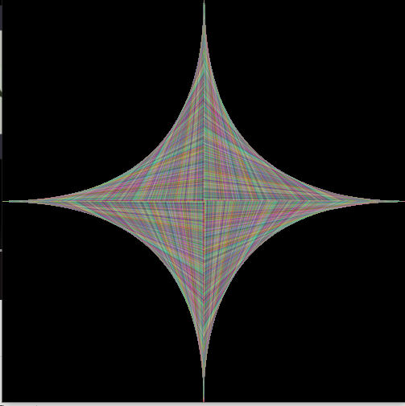

Yash ParbatHi. I am from Mombasa,Kenya which is in East Africa. Having no prioir coding experience I am quite excited to have attended the bootcamp and learnt a lot over the past few days. Bootcamp, in my opinion, was a great way to familirise with what to expect in the coming future as far as the course is concerned. |
 | |
|
|
||
Bootcamp 2021: Drawing StarsMy first programming project, concluding the 2 week Programming Bootcamp at City (2021). This Processing project demonstrates what I have learnt during the bootcamp and for this project mostly the use of loops,methods and randomness. I created a star which is drawn by altering the position of lines and changed the colour of the lines to make it more decorative. Check out the code on Github: Link to github | Watch a video of my project: Link to Video | |
|   | ||